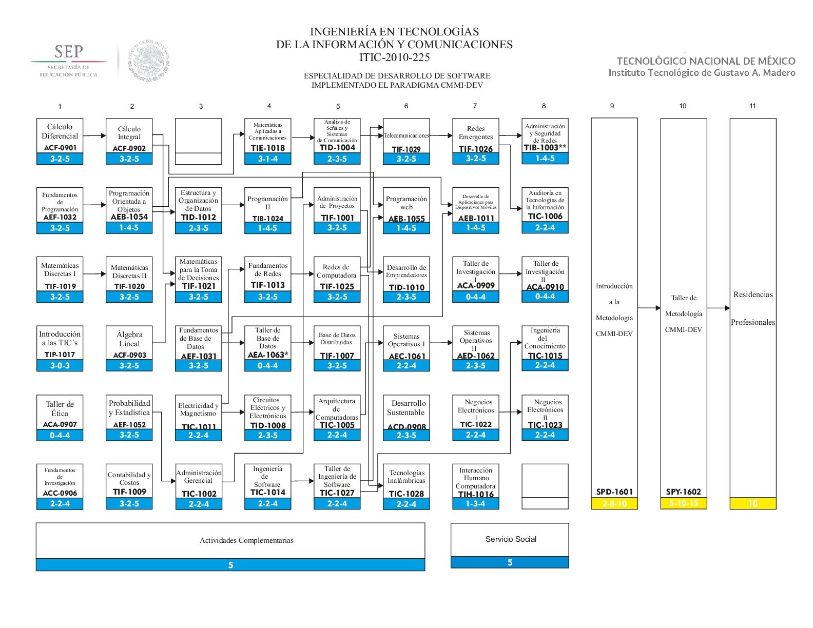

Ingeniería en Tecnologías de la Información y Comunicaciones
Perfil de ingreso:
El estudiante deberá tener habilidades para la comunicación oral y escrita, habilidades matemáticas de nivel medio superior, capacidad de redacción ante diferentes situaciones, con actitud proactiva y responsable, destreza para analizar y sintetizar información. Tener iniciativa y contar con la capacidad para establecer relaciones interpersonales, nivel básico de inglés, trabajo en equipo y apertura para conocer otras culturas
Reticula Vigente Dual

La Ingeniería en Tecnologías de la Información y Comunicaciones cuenta con una carga semanal de 30 horas de clase, y tiene una duración de 9 semestres, a continuación:
Semestre 1 y 2.
Asignaturas
Semestre
Primer semestre
Segundo semestre
Del área básica
Horas semanales
Horas semanales
Cálculo Diferencial
5
0
Fundamentos de programación
5
0
Matemáticas Discretas 1
5
0
Introducción a las TIC´s
5
0
Taller de Ética
5
0
Fundamentos de Investigación
5
0
Cálculo Integral
0
5
Prog. Orientada a Objetos
0
5
Matemáticas Discretas 2
0
5
Álgebra Líneal
0
5
Probabilidad y Estadística
0
5
Contabilidad y Costos
0
5
TOTAL
30
30
Semestre 3.
Asignaturas
Horas semanales
Del área básica
Matemáticas Para la Toma de Decisiones
5
Administración Gerencial
5
Especialidad
Estructura y Organización de datos
15
Fundamentos de Base De Datos
Electricidad y Magnetísmo
TOTAL
25
Semestre 4.
Asignaturas
Horas semanales
Especialidad
Matemáticas Aplicadas A las Comunicaciones
30
Programación 2
Fundamentos de Redes
Taller de Base De Datos
Circuitos Electrícos y Electrónicos
Ingeniería de Software
TOTAL
30
Semestre 5.
Asignaturas
Horas semanales
Especialidad
Análisis de Señales y Sistemas de Comunicación
30
Arquitectura de Computadoras
Taller de Ingeniería de Software
Administración de Proyectos
Bases de Datos Distribuidas
Redes de Computadoras
TOTAL
30
Semestre 6.
Asignaturas
Horas semanales
Especialidad
Desarrollo Sustentable
30
Programación Web
Sistemas Operativos I
Tecnologías Inalámbricas
Desarrollo de Emprendedores
Telecomunicaciones
TOTAL
30
Semestre 7.
Asignaturas
Horas semanales
Especialidad
Taller de investigación I
30
Desarrollo de Aplicaciones para Dispositivos
Móviles
Sistemas Operativos II
Negocios Electrónicos I
Redes Emergentes
Interacción Humano Computadora
TOTAL
30
Semestre 8.
Asignaturas
Horas semanales
Especialidad
Taller de investigación II
30
Programación web en pila completa 1
Administración y Seguridad de Redes
Auditoría en Tecnologías de la Información
Ingeniería del Conocimiento
Negocios Electrónicos II
TOTAL
30
Semestre 9.
Asignaturas
Horas semanales
Especialidad
Desarrollo de Aplicaciones Web Del Lado Del Cliente
20
Desarrollo Web Del Lado Del Servidor
Programación Web en Pila Completa
Desarrollo de Servicios Web
TOTAL
20
Objetivos Educacionales
Desarrollar Tecnologías de la Información y Comunicación (TIC´S) con distintas arquitecturas de hardware y software para su aplicación a la solución de las necesidades técnicas actuales.
Implementar las TIC´S a la solución de problemas que respondan a las necesidades del entorno.
Administrar proyectos que mediante la aplicación de las TIC´S garanticen la integridad, disponibilidad y confidencialidad de la información.
Campo Ocupacional
Los ingenieros en tecnologías de la información y comunicaciones son solucionadores de problemas, organizadores, comunicadores, diseñadores y calculadores en las empresas, trabajan en casi cualquier tipo de organización, pequeñas, medianas y grandes, ya que todas hacen uso de los sistemas de información para automatizar procesos, son capaces de definir un problema en términos de tiempo, costos y proveer una simple solución.
Especialidad Vigente
"DESARROLLO DE APLICACIONES WEB"
OBJETIVO
Formar especialistas capaces de desarrollar aplicaciones web del lado del cliente y del servidor mediante lenguajes de programación y frameworks, que permitan aplicar las mejores prácticas del modelo vista controlador (MVC) con el manejo de protocolos y estándares para el intercambio entre las diversas aplicaciones que accedan a los servicios web.
ATRIBUTOS DE EGRESO
Diseña, implementa y administra redes de cómputo y comunicaciones para satisfacer las necesidades de información de las organizaciones, con base en modelos y estándares internacionales.
Administra proyectos que involucren Tecnologías de la Información y Comunicaciones para el logro de los objetivos organizacionales conforme a requerimientos establecidos.
Implementa sistemas de seguridad acorde a políticas internas de las organizaciones basados en estándares establecidos, con la finalidad de garantizar la integridad y consistencia de la información
Aplica los aspectos de legislación informática para regular el uso y explotación de las Tecnologías de la Información y Comunicaciones.
Diseña e implementa dispositivos con software embebido para aplicaciones de propósito específico.
Utiliza tecnologías emergentes y herramientas actuales para atender necesidades acordes al entorno.
Diseña e implementa interfaces gráficas de usuario para facilitar la interacción entre el ser humano, los equipos y sistemas electrónicos.
Posee habilidades metodológicas de investigación que fortalezcan el desarrollo cultural, científico y tecnológico en el ámbito de sistemas computacionales y disciplinas afines.
Selecciona y aplica herramientas matemáticas para el modelado, diseño y desarrollo de tecnología computacional.
Desempeña sus actividades profesionales considerando los aspectos legales, éticos, sociales y de desarrollo sustentable.
Integra las diferentes arquitecturas de hardware y administra plataformas de software para incrementar la productividad en las organizaciones.
Crea empresas en el ámbito de las Tecnologías de la Información y Comunicaciones para contribuir al desarrollo del entorno.
Desempeña funciones de consultoría y auditoría para validar procesos y garantizar la calidad en el uso de las Tecnologías de la Información y Comunicaciones.
Diseña, desarrolla y gestiona sistemas de bases de datos para garantizar la integridad, disponibilidad y confidencialidad de la información dispositivos.
Desarrolla e implementa sistemas de información para la gestión de procesos y apoyo en la toma de decisiones, utilizando metodologías basadas en estándares internacionales.
PERFIL DEL ESTUDIANTE
Si deseas ingresar a esta especialidad debes poseer el siguiente perfil:
El estudiante deberá tener habilidades para la comunicación oral y escrita, habilidades matemáticas de nivel medio superior, capacidad de redacción ante diferentes situaciones, con actitud proactiva y responsable, destreza para analizar y sintetizar información. Tener iniciativa y contar con la capacidad para establecer relaciones interpersonales, nivel básico de inglés, trabajo en equipo y apertura para conocer otras culturas.